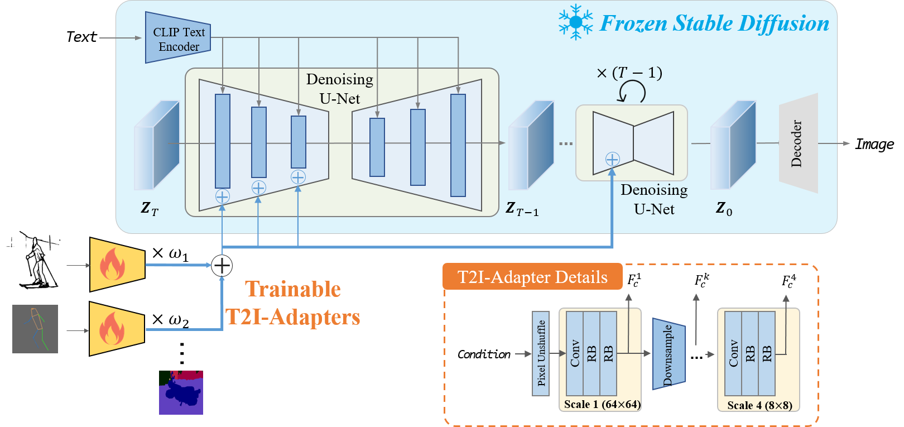
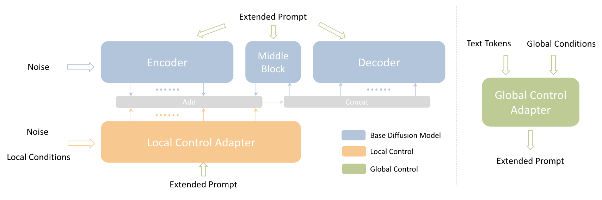
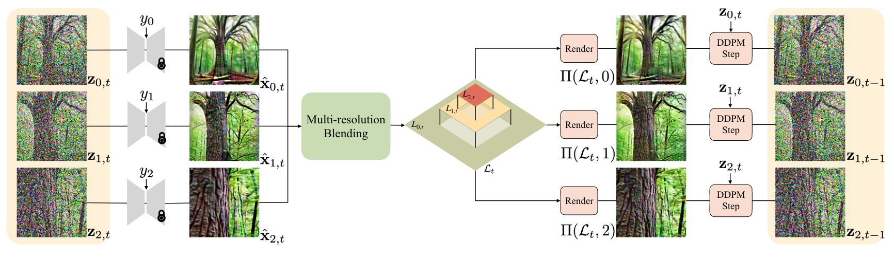

扩散模型应用·可控生成
封面来自 CivitAI.
GLIGEN
University of Wisconsin-Madison Columbia University Microsoft 2023.01.17
ControlNet
Stanford ICCV 2023 best paper 2023.02.10
尽管文生图大模型的出现让人们能够用自然语言方便地创作，但是文本的控制粒度终究还是比较粗糙，我们希望引入更多种类的条件进行细粒度的控制。显然，在每种条件上都训练一个大模型并不现实，于是人们尝试在基础的文生图模型上引入额外的网络来融入条件，其中，ControlNet[1] 无疑是最为出名的工作。
其实 ControlNet 的思想很简单，就是把原有网络复制一份，通过 zero convolution，即权重初始化为 0 的卷积层连在一起。训练时原权重保持不变，因此 ControlNet 就像一个插件一样，随时可以插上或者去掉。zero convolution 的设置是为了避免训练初期破坏了原模型的生成能力。
具体到 Stable Diffusion 上，作者只复制了 encoder 部分，并将对应分辨率的特征加到了 decoder 部分，如下图所示：
这样设计的好处在于训练时梯度无需回传到原来的 encoder 之中，节省计算量。
尽管是基于 Stable Diffusion 这样的大规模预训练模型，ControlNet 的训练时间还是相当可观的：
点击查看 ControlNet 的生成样例（摘自论文）
Mixture of Diffusers
2023.02.05
- 动机： 与 MultiDiffusion 类似，希望在同一张图片的不同区域使用预训练扩散模型，从而扩展图片尺寸或实现复杂构图的分区域控制。
- 方法： 也与 MultiDiffusion 类似，只不过是对预测的噪声做加权平均（而不是对去噪结果做）。实测效果比 MultiDiffusion 更好一些。
T2I-Adapter
PKU Shenzhen Tencent 2023.02.16
与 ControlNet 类似，T2I-Adapter[2] 也是使用额外网络为扩散模型引入条件，如图所示：

每种条件经由 Adapter 网络得到多尺度特征，加到对应尺度的原 Stable Diffusion 的 UNet 之中。不同网络的特征还可以加权和来达到多条件控制的目的（不过权重需要人为调整）。
与 ControlNet 相比，T2I-Adapter 更加轻量（参数量约 70MB，文件大小 308MB），在 4 卡 V100 上训练用时 3 天。
点击查看 T2I-Adapter 的生成样例（摘自官方 repo）
MultiDiffusion
2023.02.16
- 多个扩散模型生成一张图片的不同区域，融合它们的扩散过程使结果和谐、平滑；无需训练或微调，只需要一个预训练扩散模型
- 应用场景：
- 极大扩展生成图像的尺寸和长宽比
- 分区域生成，不同区域可以基于不同条件
- 方法（以扩展生成图像的尺寸为例）：首先将图片划分成有重叠的区域，分别用预训练模型进行一步去噪（t → t-1）；然后将去噪结果做加权平均（原文将其形式化为了一个优化问题，但其解析解就是加权平均）
- 简单粗暴但有效，在需要分区使用扩散模型时可以考虑
Composer
2023.02.22
UniControl
Salesforce NeurIPS 2023 2023.05.18
ControlNet 有一个显著的缺点——每一种条件都需要一个模型。因此，UniControl[6]的作者提出让一个（类似于 ControlNet 架构的）模型同时支持各种条件。
从图中可以看见，UniControl 主要分为三个阶段：
- MOE Adapter 对不同种类的条件分别用卷积网络提取特征（这也算 MOE?）；
- Task Aware HyperNet 接收关于任务的文本描述（如 "normal surface to image"），通过 CLIP Text Encoder 编码为 text embedding 后，经过可学习的 Hypernet 得到 task embedding.
- Modulated Zero Conv 使用步骤 2 得到的 task embedding 来调制卷积。
为了训练 UniControl，作者收集并形成了有 20 million 个「图像-文本-条件」三元组的数据集 MultiGen-20M dataset. 训练耗时 5000 GPU hours (NVIDIA A100-40G)，与所有条件的 ControlNet 的训练总用时相当，还是非常可观的。
点击查看 UniControl 的生成样例（摘自论文）
Uni-ControlNet
HKU Microsoft NeurIPS 2023 2023.05.18
Uni-ControlNet[7] 与 UniControl 解决的是同样的问题，而且名字很像，甚至挂在 arxiv 上的时间都是同一天……不过二者的方法还是挺不同的。
Uni-ControlNet 将控制条件分成了两组——local controls 和 global controls，前者包括边缘图、深度图、分割图等，后者只有一种——参考图像（用 CLIP image embedding 表示）。Local controls 和 global controls 分别用一个 adapter 来微调：
- Local controls 的 adapter 将控制信号转换后通过调制卷积的方式融入模型特征图
- Global controls 的 adapter 将控制信号转换成 tokens 拼接在 text tokens 后
如下图所示：

为了训练模型，作者使用的数据集是从 LAION 中随机采样的 10 million 个文本图像对。
点击查看 Uni-ControlNet 的生成样例（摘自官方 repo）

Generative Powers of Ten
University of Washington Google Research UC Berkeley 2023.12.04
给定一个场景在不同放大尺度上的文本描述，Generative Powers of Ten[8] 通过操纵、融合扩散模型在多个分辨率下预测的 x0，使用预训练扩散模型实现不断放大(zoom in)一张图像的视频效果。

如图所示，作者的思路是操纵模型预测的 \(\mathbf x_0\)，使得各尺度重叠的部分有着相同的预测值，从而保证放大过程的连贯统一。这种融合 \(\mathbf x_0\) 的思路与 MultiDiffusion[4] 是一致的。进一步地，作者还融合了逆向过程采样的 \(\epsilon\)，使得各尺度采样出的 \(\mathbf x_{t-1}\) 在重叠部分也是相同的。
那么具体是如何融合各尺度预测的 \(\mathbf x_0\) 呢？作者分两步实现。首先，由于大尺度图像包含了小尺度图像的低分辨率部分，因此作者考虑采用 Laplacian 金字塔进行多分辨率融合，也即概览图中的 Multi-resolution Blending，如下左图所示：
在多分辨率融合后，各尺度图像融入了更大尺度图像的低分辨率信息，可以理解为信息由上至下流动；但此时各尺度图像重叠部分并不相同。因此，作者接下来将小尺度图像由下至上覆盖到大尺度图像对应位置处，即概览图中 Render 部分，如上右图所示。
References
- Zhang, Lvmin, and Maneesh Agrawala. Adding conditional control to text-to-image diffusion models. arXiv preprint arXiv:2302.05543 (2023). ↩︎
- Mou, Chong, Xintao Wang, Liangbin Xie, Jian Zhang, Zhongang Qi, Ying Shan, and Xiaohu Qie. T2i-adapter: Learning adapters to dig out more controllable ability for text-to-image diffusion models. arXiv preprint arXiv:2302.08453 (2023). ↩︎
- Jiménez, Álvaro Barbero. Mixture of diffusers for scene composition and high resolution image generation. arXiv preprint arXiv:2302.02412 (2023). ↩︎
- Bar-Tal, Omer, Lior Yariv, Yaron Lipman, and Tali Dekel. Multidiffusion: Fusing diffusion paths for controlled image generation. (2023). ↩︎
- Huang, Lianghua, Di Chen, Yu Liu, Yujun Shen, Deli Zhao, and Jingren Zhou. Composer: Creative and controllable image synthesis with composable conditions. arXiv preprint arXiv:2302.09778 (2023). ↩︎
- Qin, Can, Shu Zhang, Ning Yu, Yihao Feng, Xinyi Yang, Yingbo Zhou, Huan Wang et al. UniControl: A Unified Diffusion Model for Controllable Visual Generation In the Wild. arXiv preprint arXiv:2305.11147 (2023). ↩︎
- Zhao, Shihao, Dongdong Chen, Yen-Chun Chen, Jianmin Bao, Shaozhe Hao, Lu Yuan, and Kwan-Yee K. Wong. Uni-ControlNet: All-in-One Control to Text-to-Image Diffusion Models. arXiv preprint arXiv:2305.16322 (2023). ↩︎
- Wang, Xiaojuan, Janne Kontkanen, Brian Curless, Steve Seitz, Ira Kemelmacher, Ben Mildenhall, Pratul Srinivasan, Dor Verbin, and Aleksander Holynski. Generative Powers of Ten. arXiv preprint arXiv:2312.02149 (2023). ↩︎